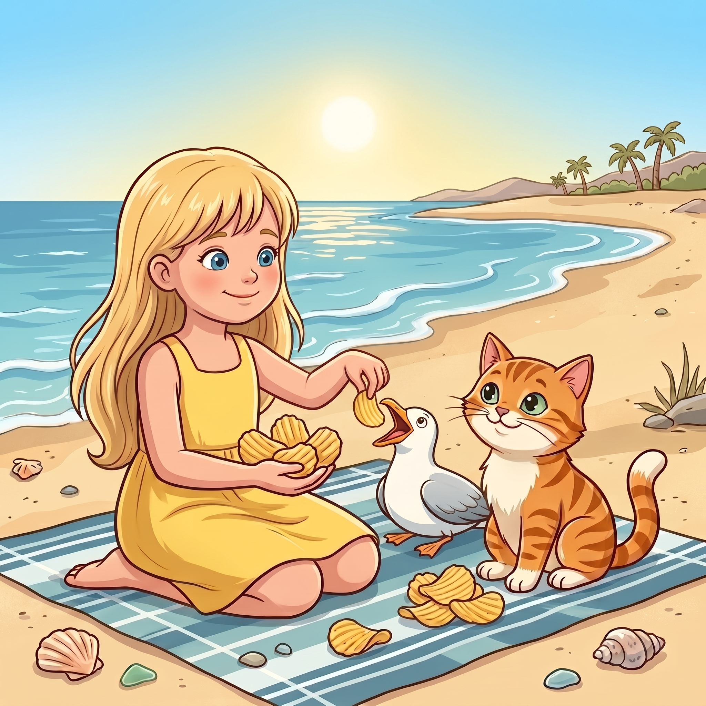

Step 1 · Say the Sound Team
th
t and h make a new sound, like thanks.
3️⃣three
🙏thanks
🐾them
Read th words. Then read one tiny story.

t and h make a new sound, like thanks.
The girl had three chips.
She gave one to Beach Cat.
She gave one to the gull.
She kept one for herself.
“Thanks,” said Beach Cat.
The gull thanked her, too.
You read th words like three, thank, thanks, and them.
You finished the first th story set.
If it still feels fun, read your favorite th story again.